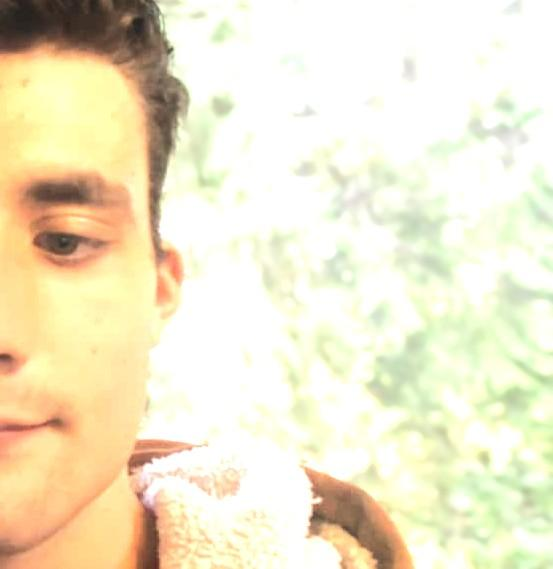

Welcome to WDD 130!

Hello! My name's Carson! I got interested into Web Development due to taking a coding class earlier in the year, and I decided I wanted to do more of that as well as accounting, leading me to this class. I live in a rainforest in Washington State, but not the tropical kind like most people think of; it's a temperate rainforest, which means it's colder and less diverse than a tropical forest (as it's a roughly 45° lattitude). I love to play the piano, and also play outside, especially when I am jumping on the trampoline. Sometimes, when playing the piano, I make up my own songs. I also am good at singing (I'm a musical person after all). I am also autistic, which means I think quite differently than the typical person. My favorite animal is the rabbit, because bunnies are so cute!